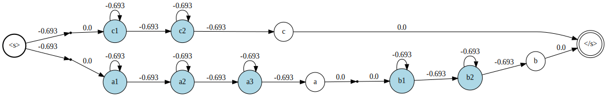
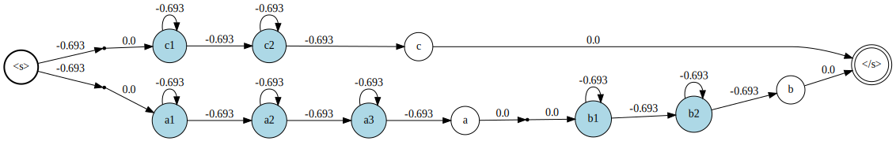
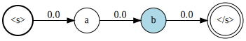
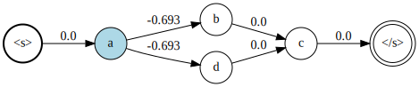

Finite State Machines
The MarkovModels package represents Markov chains as probabilistic a Finite State Machine (FSM). Here is an example of FSM as used by the package:

The double edge circle node with the label "<s>" (respectively "</s>") is the initial (respectively final) state of the FSM. States with light blue background color are emitting states, that is, they are associated with a probability density function index (pdfindex). If they have no label, this index is use when displaying the node - as in the example above. White circle node with a label written inside are non-emitting labeled states. The states represented as point are neither emitting nor have a label. Finally, the number on the links are the log-probabilities to move from one state to another.
In the following, we present the tools provided by the package manipulate such FSM. All the examples below assume that you have already imported the MarkovModels package by doing using MarkovModels.
Creating FSMs
FSMs are represented by the following structure:
MarkovModels.FSM — Typestruct FSM{T}
...
endStructure of a FSM. The type T indicates the type of the arcs' weight.
To create an FSM object simply type:
fsm = FSM{Float64}()
When created, the FSM has only two states: the initial state and the final state. FSMs cannot have multiple initial for final states.
You can add states to the FSM by using the function addstate!:
s1 = addstate!(fsm, pdfindex = 1)
s2 = addstate!(fsm, pdfindex = 2, label = "a")
s3 = addstate!(fsm, label = "b")
s4 = addstate!(fsm)
Note that a state can be:
- emitting and labeled
- emitting only
- labeled only
- non-emitting and non-labeled (nil state)
The initial and final states are specific nil states.
The link! allows to add weighted arcs between states:
link!(initstate(fsm), s1)
link!( s1, s1, log(1/2))
link!(s1, s2, log(1/2))
link!(s2, s3)
link!(s3, s4)
link!(s4, finalstate(fsm))
Finally, we provide a special constructor for convenience:
MarkovModels.LinearFSM — FunctionLinearFSM([T, ]seq[, emissionsmap::Dict{<:Label, <:PdfIndex}])Create a linear FSM of type T from a sequence of labels seq. If emissionsmap is provided, every item l of seq with a matching entry in emissionsmap will be assigned the pdf index emissionsmap[l]. PdfIndex can be any integer type and Label any string type.
For instance,
fsm = LinearFSM(Float32, ["a", "b", "c"], Dict("a" => 1, "b" => 2, "c" => 3))
States
MarkovModels.State — Typestruct State
id
pdfindex
label
endState of a FSM.
idis the unique identifier of the state within a FSM.pdfindexis the index of a probability density associated to the state. If the state is non-emitting,pdfindexis equal tonothing.labelis a readable name (eitherStringorNothing).
Examples
julia> State(1)
State(1)
julia> State(1, pdfindex = 2)
State(1, pdfindex = 2)MarkovModels.isemitting — Functionisemitting(state)Returns true if state a pdf index associated.
MarkovModels.isinit — Functionisinit(state)Returns true if the state is the initial state of the FSM.
MarkovModels.isfinal — Functionisfinal(state)Returns true if the state is the final state of the FSM.
MarkovModels.islabeled — Functionislabeled(state)Returns true if the state has a label.
MarkovModels.links — Methodlinks(state)Iterator over the links to the children (i.e. next states) of state.
MarkovModels.nextemittingstates — Functionnextemittingstates(fsm, state)Iterator over the next emitting states. For each value, the iterator return a tuple (nextstate, weightpath, path). The weight path is the sum of the weights for all the link to reach nextstate. Path is a vector of links between state and nextstate.
Links
MarkovModels.Link — Typestruct Link{T}
src::T where T<:AbstractState
dest::D where T<:AbstractState
weight::T
endWeighted link pointing from a state src to a state dest with weight weight. T is the type of the weight value. The weight represents the log-probability of going through this link.
Iterating over states and links
MarkovModels.initstate — Functioninitstate(fsm)Returns the initial state of fsm.
MarkovModels.finalstate — Functionfinalstate(fsm)Returns the final state of fsm.
MarkovModels.links — Functionlinks(state)Iterator over the links to the children (i.e. next states) of state.
links(fsm)Returns the list of the links of the FSM.
MarkovModels.states — Functionstates(fsm)Iterator over the state of fsm.
FSM operations
Composition
MarkovModels.compose — Functioncompose(subfsms::Dict, fsm)
Base.:∘(subfsms::Dict, fsm)Replace each state s in fsm by a "subfsms" from subfsms with associated label s.label. subfsms should be a Dict{<:Label, FSM}`.
Example
fsm = union(LinearFSM(["a", "b"]), LinearFSM(["c"])) |> weightnormalize
subfsms = subfsms = Dict(
"a" => LinearFSM(["a1", "a2", "a3"], Dict("a1"=>1, "a2"=>2, "a3"=>3)),
"b" => LinearFSM(["b1", "b2"], Dict("b1"=>4, "b2"=>5)),
"c" => LinearFSM(["c1", "c2"], Dict("c1"=>6, "c2"=>1))
)
compose(subfsms, fsm)Input :
fsm

subfsms["a"]

subfsms["b"]

subfsms["c"]
 Output: 
Output: 
Alternatively, FSMs can be composed with the ∘ operator:
fsm ∘ sufsmsConcatenation
MarkovModels.concat — Functionconcat(fsm1, fsm2, ...)Concatenate several FSMs into single FSM.
Example
fsm1 = LinearFSM(["a", "b"])
fsm2 = LinearFSM(["c", "d"])
fsm3 = LinearFSM(["e"])
concat(fsm1, fsm2, fsm3)Input:
fsm1

fsm2

fsm3

Output: 
Determinization
MarkovModels.determinize — Functiondeterminize(fsm)Transform fsm such that each state has at most one link to any other states.
Example
fsm = FSM{Float64}()
s1 = addstate!(fsm, label = "a")
s2 = addstate!(fsm, label = "b", pdfindex = 1)
link!(s1, s2, log(1/2))
link!(s1, s2, log(1/2))
link!(initstate(fsm), s1)
link!(s2, finalstate(fsm))
fsm |> determinizeInput: 
Output: 
Minimization
MarkovModels.minimize — Functionminimize(fsm)Merge equivalent states to reduce the size of the FSM. Only the states that have the same pdfindex and the same label can be potentially merged.
The input FSM should not contain cycles otherwise the algorithm will never end.
Example
fsm = union(LinearFSM(["a", "b", "c"], Dict("a"=>1)), LinearFSM(["a", "d", "c"], Dict("a"=>1)))
fsm |> minimizeInput:

Output:

Nil states removal
MarkovModels.removenilstates — Functionremovenilstates(fsm)Remove all states that are non-emitting and have no labels (except the the initial and final states)
Example
fsm = LinearFSM(["a", "b"], Dict("a" => 1))
nil = addstate!(fsm)
link!(initstate(fsm), nil)
link!(nil, finalstate(fsm))
fsm = fsm |> weightnormalize
fsm |> removenilstatesInput:

Ouput:

Transposition
Base.transpose — Methodtranspose(fsm)Transpose the fsm, i.e. reverse all it's arcs. The final state becomes the initial state.
Example
fsm = LinearFSM(["a", "b", "c"])
transpose(fsm)Input:

Output:

Union
Base.union — Methodunion(fsm1, fsm2, ...)
∪(fsm1, fsm2, ...)Merge several FSMs into a single one.
Example
fsm1 = LinearFSM(["a", "b", "c"], Dict("a"=>1))
fsm2 = LinearFSM(["a", "d", "c"], Dict("a"=>1))
union(fsm1, fsm2)Input:
fsm1
fsm2
Output:

Weights normalization
MarkovModels.weightnormalize — Functionweightnormalize(fsm)Change the weight of the links such that the sum of the exponentiated weights of the outgoing links from one state will sum up to one.
Example
fsm = union(LinearFSM(["a", "b"]), LinearFSM(["c", "d"]))
for s in states(fsm)
if ! isinit(s) && ! isfinal(s)
link!(s, s)
end
end
fsm |> weightnormalizeInput:

Output: